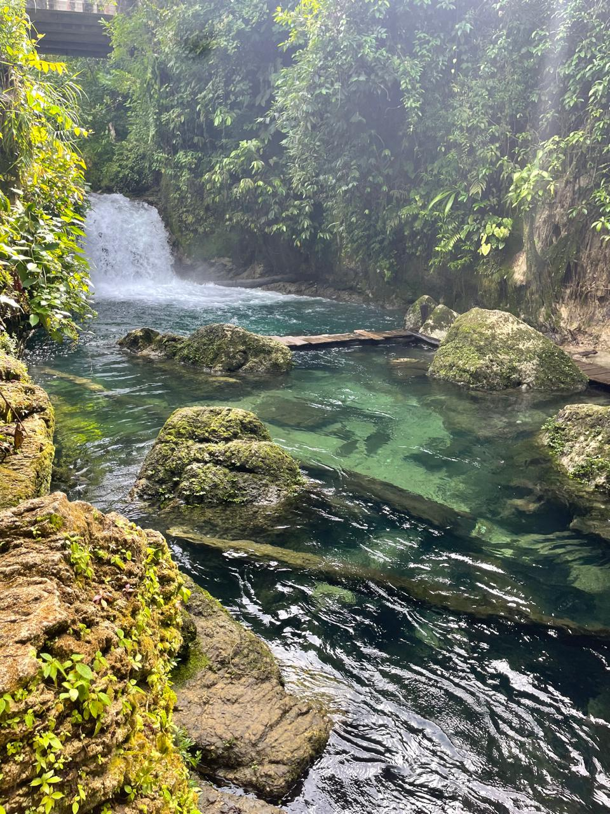
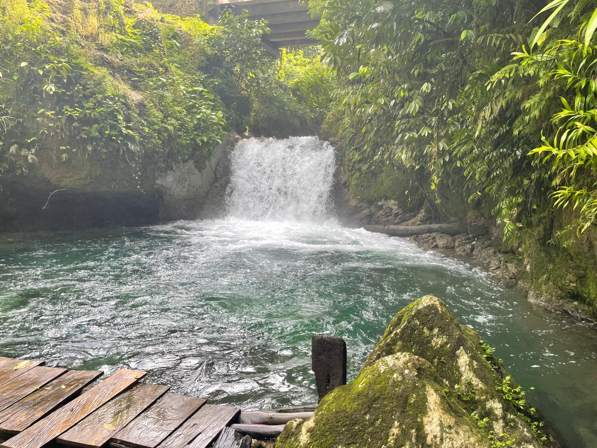

Galeri Air Terjun Sevese



Keindahan Alam
Air Terjun Sevese merupakan salah satu destinasi wisata alam yang terletak di Kampung Haha, Distrik Seremuk, Kabupaten Sorong Selatan. Tempat wisata ini menawarkan keindahan alam yang sangat memukau dengan lingkungan yang masih asri dan kelestarian alam yang terjaga dengan baik. Selain menikmati keindahan air terjun, pengunjung juga dapat bersantai di aliran Kali Sevese yang jernih. Tersedia pula spot kapal air dan area bermain air yang aman dan cocok untuk dinikmati bersama keluarga. .
Tempat ini cocok untuk wisata alam, fotografi, dan melepas penat dari hiruk-pikuk perkotaan.